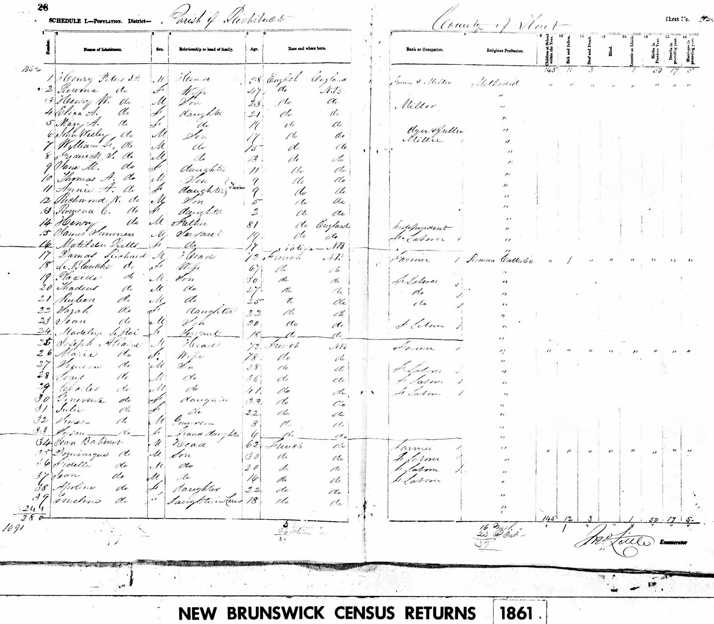
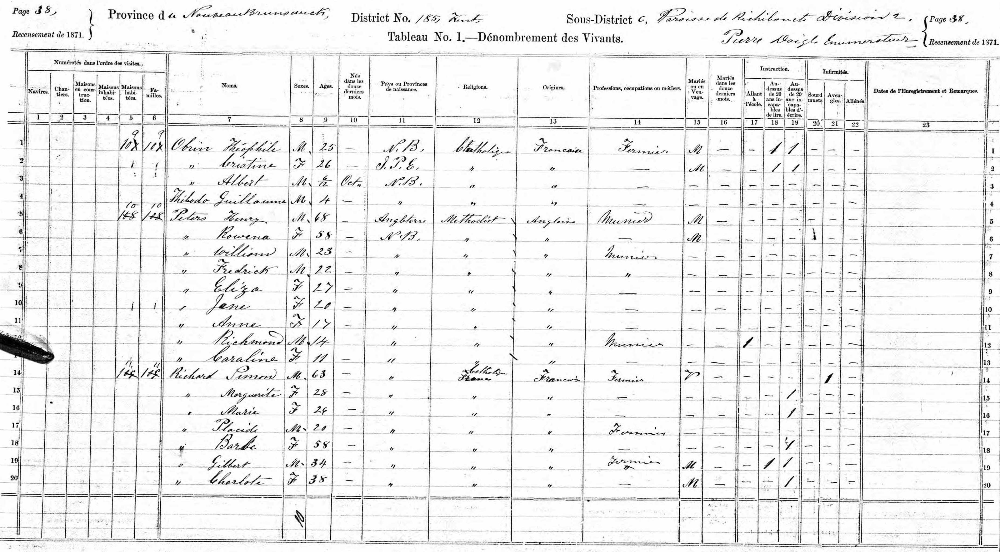
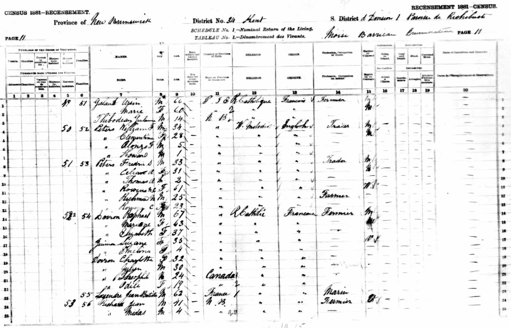
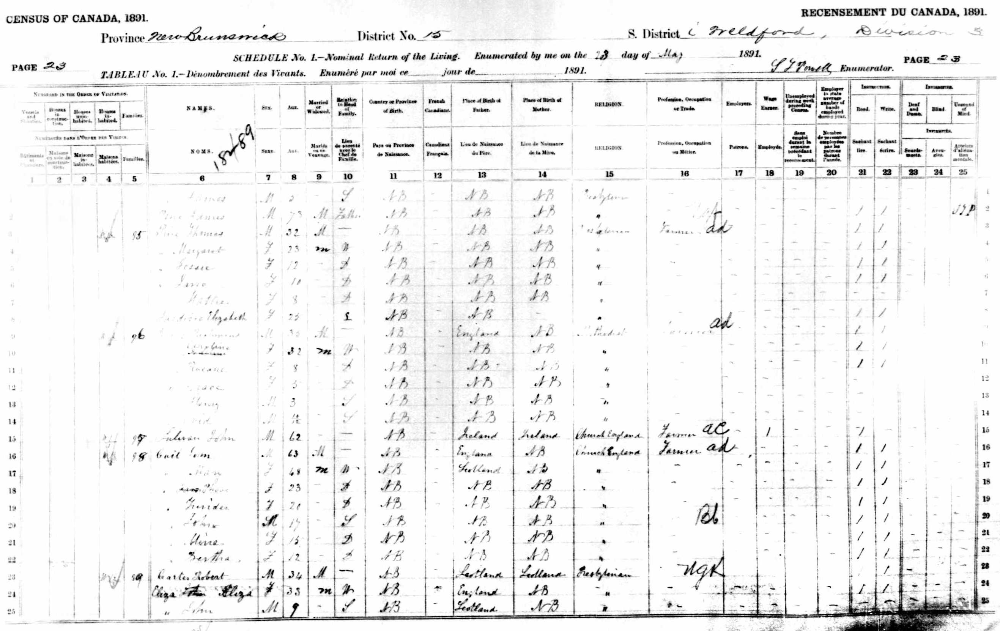
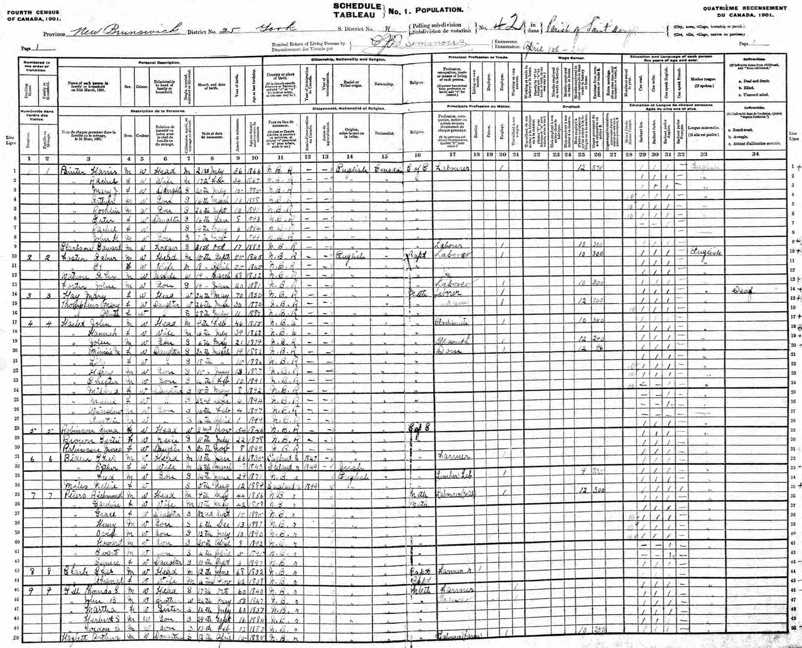
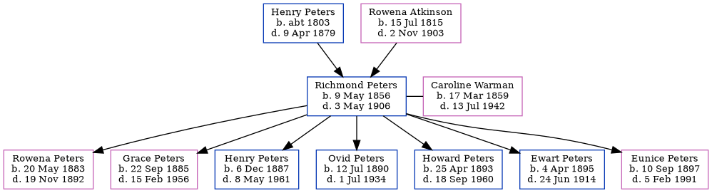

Richmond Noble Peters 1856 - 1906
[ Home ] | [ Calendar ] | [ Surnames Index ] | [ Family History ]A farmer and the son of Henry Peters and Rowena AtkinsonRichmond Peters, the second cousin three-times-removed on the father's side of Nigel Horne, was born in Richibucto, Kent, New Brunswick, Canada on May 9, 18561,2,3,4,5,6,7,8,9 and married Caroline Warman (with whom he had 7 children: Rowena Dorcas Roma, Grace Idaline, Henry Albert, Rev Ovid Hutton, Pte Howard Watson, Ewart A and Eunice Louisa) in Richibucto on May 2, 1882.
Richmond spent all of his life in New Brunswick, Canada. Throughout his life, he lived in several places around the county: at his birthplace in 18611, in 18719 and in 18813 (the same place as his father had been living in 1861); in Weldford, Kent, New Brunswick, Canada on May 28, 18914; and in St Marys, York in 19015.
He died on May 3, 1906 in Fredericton, York, New Brunswick8 and was buried at Bradley-Gill Memorial Cemetery, St Marys, York, New Brunswick after May 3, 19068.
Parents
- Henry Warman was born c. 1803
- Rowena Noble Charlotte was born on Jul 15, 1815
Children
- Rowena Dorcas Roma was born on May 20, 1883
- Grace Idaline was born on Sep 22, 1885
- Henry Albert was born on Dec 6, 1887
- Rev Ovid Hutton was born on Jul 12, 1890
- Pte Howard Watson was born on Apr 25, 1893
- Ewart A was born on Apr 4, 1895
- Eunice Louisa was born on Sep 10, 1897
Citations
- 1861 Census of Canada Ancestry.com Operations Inc (Relation to Head of House: Son)
- 1871 Census of Canada Ancestry.com Operations Inc
- 1881 Census of Canada Ancestry.com Operations Inc
- 1891 Census of Canada Ancestry.com Operations Inc (Marital Status: MarriedRelation to Head of House: Head)
- 1901 Census of Canada Ancestry.com Operations Inc (Marital Status: MarriedRelation to Head of House: Head)
- Canada Census 1861 - Findmypast
- Canada Census 1891 - Findmypast
- Canada, Find A Grave Index, 1600s-Current Ancestry.com Operations, Inc.
- Kent County, New Brunswick Census, 1871: Eight Subdistricts Ancestry.com Operations Inc
- Canada Census 1901 - Findmypast (was the head of the household)
Media
1861 Canada Census

1871 Canada Census

1881 Canada Census

1891 Canada Census

1901 Canada Census

Richmond Peters - Caroline Warman - marriage

Canada Census 1901 - CAN/CENSUS/1901/00742756
Canada Census 1891 - CAN/CENSUS/1891/00347283
Canada Census 1861 - CAN/CENSUS/1861/02668130
Canada Census 1871 - CAN/CENSUS/1871/00222623
Canada Census 1881 - CAN/CENSUS/1881/00363836
Family Tree
Generated by ged2site. Last updated on Nov 13, 2024